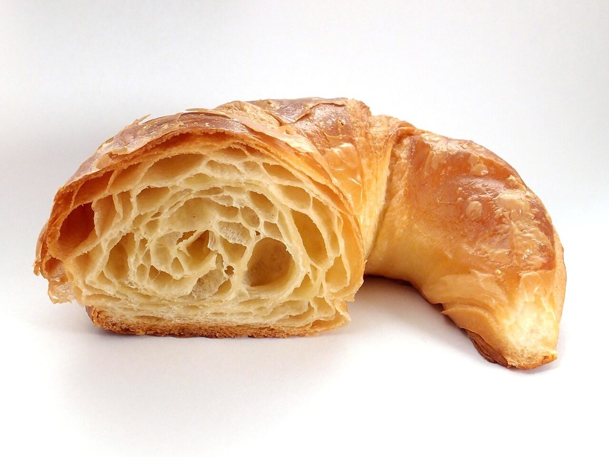
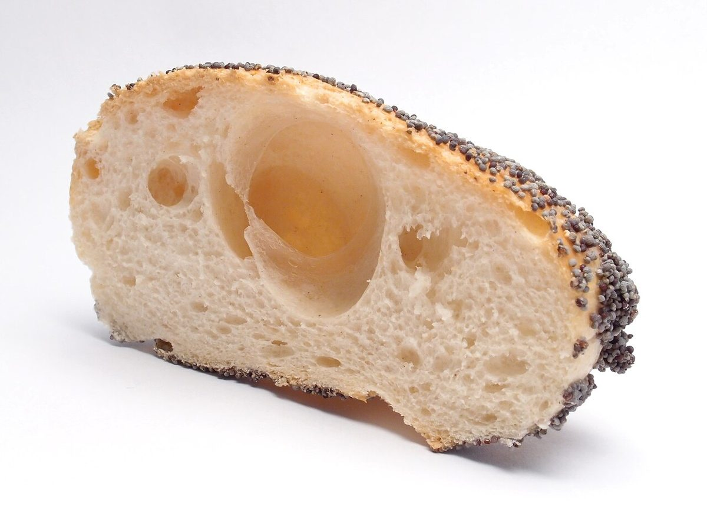

桁札 E
店のこと
E = 1414 × 1 = 14ここまでの合計 51966
分かっていること
いまのところ、この四つだけ。
- 屋号: Uchide CAFE(業種: カフェ)
- 所在地: 長野県佐久市野沢１３−１
- 電話: 0267-88-5080
- Instagram: @uchidecafe
お店の由来・料理・内装などは分からないため、ここには書いていません。分かりしだい、お店のご確認のうえで差し替えます。

制作側の連想
なぜ、十六進数なのか
屋号の後ろの CAFE が、A〜F の文字だけでできていたから、というだけの理由です。0xCAFE は十進にすると 51966。最上位の C が 12 × 4096 = 49152 とほとんどを占め、A が 2560、F が 240、最後の E が 14 を足します。
制作側の連想で、お店の理念・由来とは無関係です。



四桁のうち、いちばん下の E はたった 14。小さな桁も、足してはじめて 51966 になります。(写真はイメージ)